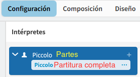
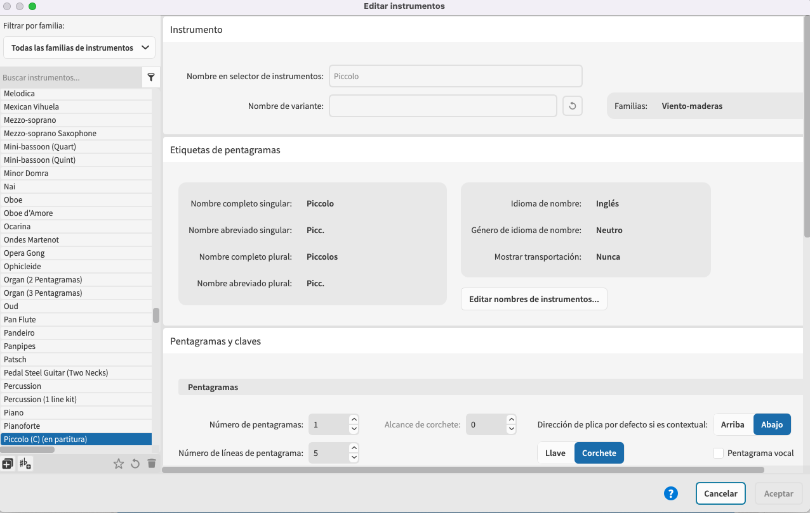

Intérpretes/Maquetaciones
En el modo de Configuración de Dorico, el panel izquierdo (⌘7) está vinculado con la partitura general, mientras que el panel derecho (⌘9), se vincula directamente con las partes. Cualquier cambio de nombre o afinación afecta a la partitura o parte seleccionada. No obstante, en el cuadrado de la casilla izquierda vinculado a la partitura general, el cambio de nombre del cuadrado interno es el que modificará el nombre de la partitura completa, y el superior afectará a la parte vinculada al panel derecho.

El nombre de la parte recibe el Token: {@layoutname@}
El nombre de sistemas "etiquetas" de pentagrama de la partitura general lo definimos desde Biblioteca/Instrumentos. El Token con el que accedemos a dichos nombres es: {@stafflabelsfull@}
Enlace archivo Dorico: Nombre de etiquetas de pentagramas y partes
Instrumentos
Desde la ventana de instrumento podemos editar:
- los nombres de etiqueta de pentagrama.
- mostrar o no la tonalidad de la transposición
- número de pentagramas.
- número de líneas
- claves
- transporte
- rango estándar y avanzado
Cualquier cambio podemos dejarlo como predefinido para la próxima vez que iniciemos Dorico con dejar marcada la estrella ⭐️ bajo la ventana izquierda.
Podemos crear nuevos a partir de la selección.

El cambio de fuente es recomendable hacerlo desde Biblioteca/estilos de párrafo/Etiquetas de pentagrama